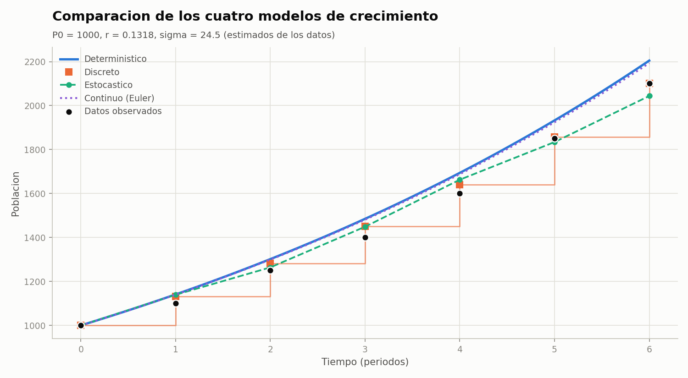
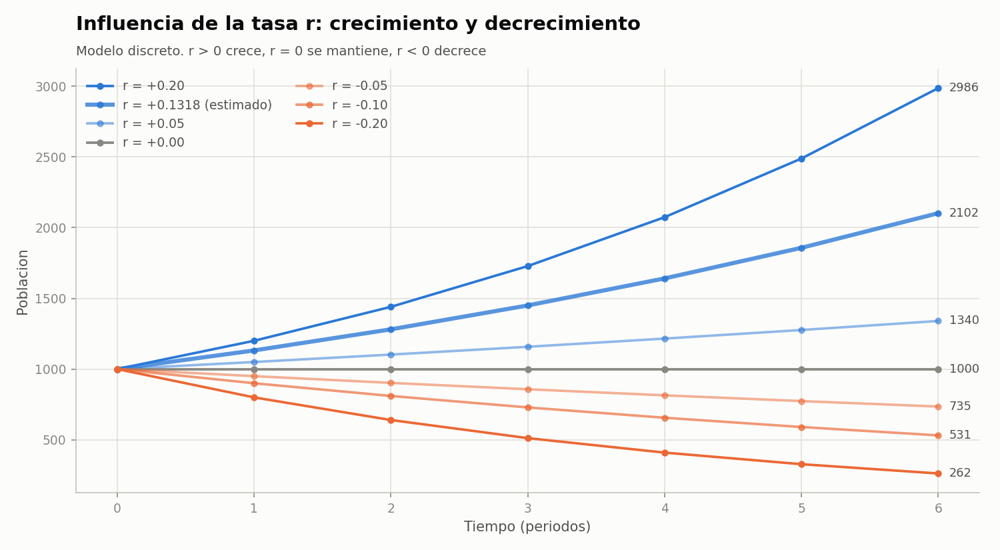
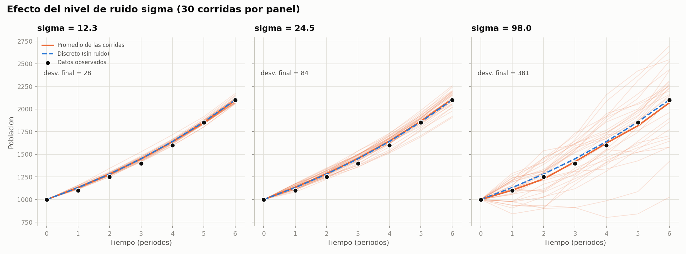
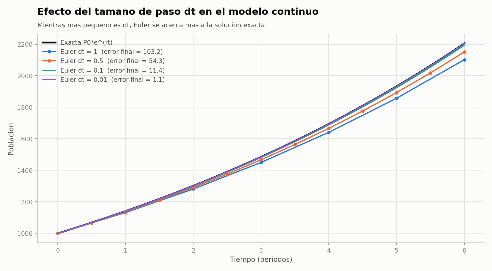

Reporte Técnico de Actividades
Práctico-Experimentales Nro. 002
1. Datos de Identificación del Estudiante y la Práctica
| Nombre del estudiante(s) | Ivett Anahi Zaragocin Mora |
| Asignatura | Simulación |
| Ciclo | 5 |
| Unidad | U1: Introducción a la Simulación |
| Resultado de aprendizaje de la unidad | R1. Aplica análisis estadísticos de los datos de la Simulación para mejorar la calidad de los resultados, bajo los principios de solidaridad, transparencia, responsabilidad y honestidad. |
| Práctica Nro. | 02 |
| Título de la Práctica | Comparación de modelos determinísticos, estocásticos, discretos y continuos |
| Nombre del Docente | José Oswaldo Guamán Quinche |
| Fecha | 08 y 09 de octubre de 2026 |
| Horario | Jueves 10h30 a 11h30 · Viernes 07h30 a 09h30 |
| Lugar | Aula |
| Tiempo planificado en el Sílabo | 3 horas |
2. Objetivo(s) de la Práctica
Objetivo general: diferenciar los principales paradigmas de simulación mediante la construcción de modelos computacionales.
Objetivos específicos:
- Implementar un modelo determinístico y uno estocástico.
- Comparar modelos discretos y continuos.
- Analizar el efecto de la aleatoriedad sobre los resultados.
3. Materiales, Reactivos, Equipos y Herramientas
Materiales y reactivos:
- Python 3.12.
- NumPy 1.26: cálculo numérico y generación de números aleatorios [1].
- Matplotlib 3.9: generación de las gráficas [2].
- Datos de la guía: población observada en 7 períodos, [1000, 1100, 1250, 1400, 1600, 1850, 2100].
Equipos y herramientas:
- Computador con sistema operativo Linux.
- Editor de código y Git/GitHub para el control de versiones.
4. Marco Conceptual
4.1 Paradigmas de simulación
Un modelo de simulación representa el comportamiento de un sistema mediante variables, parámetros, ecuaciones y reglas [3]. Según su naturaleza, se clasifica en dos dimensiones [4]:
- Determinístico o estocástico: el determinístico no contiene componentes aleatorios, por lo que sus salidas quedan totalmente definidas por las entradas. El estocástico incluye variables aleatorias, así que sus salidas son también aleatorias y deben tratarse como estimaciones.
- Discreto o continuo: en el discreto las variables de estado cambian solo en instantes separados del tiempo. En el continuo cambian de forma permanente y suelen describirse con ecuaciones diferenciales.
En esta práctica el sistema de estudio es el crecimiento poblacional, que se modela con los cuatro paradigmas.
4.2 Crecimiento exponencial (modelo determinístico)
Malthus planteó que, sin restricciones, una población crece en proporción a su tamaño [5]. Esta idea se expresa con la ecuación diferencial dP/dt = rP, cuya solución exacta es:
P(t) = P0·ert
donde P0 es la población inicial, r la tasa de crecimiento y t el tiempo. El modelo supone recursos ilimitados. Verhulst corrigió esa limitación con el modelo logístico, que añade una capacidad de carga máxima del ambiente [6].
4.3 Modelo discreto
Cuando la población se observa o se reproduce por períodos (generaciones, años), es natural modelarla con una ecuación en diferencias:
Pt+1 = Pt + r·Pt = (1 + r)·Pt ⟹ Pt = P0(1 + r)t
Los modelos discretos pueden mostrar comportamientos muy distintos a sus equivalentes continuos. May demostró que ecuaciones en diferencias muy simples pueden producir incluso oscilaciones y caos [7].
4.4 Modelo continuo y método de Euler
Muchas ecuaciones diferenciales no tienen solución exacta y se resuelven numéricamente. El método de Euler avanza la solución con pasos de tamaño Δt, usando la pendiente en el punto actual [8]:
Pt+Δt = Pt + Δt·(r·Pt)
Euler es un método de primer orden: su error global es proporcional a Δt, por lo que al reducir el paso a la mitad el error también se reduce aproximadamente a la mitad [8].
4.5 Modelo estocástico
Las poblaciones reales fluctúan por factores que el modelo no considera (clima, enfermedades, migración). Esta estocasticidad ambiental se representa sumando un término aleatorio [9]:
Pt+1 = Pt + r·Pt + εt, εt ~ N(0, σ²)
donde σ mide el nivel de variabilidad. Como cada ejecución da un resultado distinto, el modelo se analiza repitiéndolo muchas veces y estudiando la distribución de los resultados. Esta es la base del método de Monte Carlo [10]. Para el caso continuo, el método de Euler se generaliza al método de Euler–Maruyama, usado para simular ecuaciones diferenciales estocásticas [11].
4.6 Números pseudoaleatorios y reproducibilidad
Los computadores generan números pseudoaleatorios con algoritmos deterministas a partir de una semilla. NumPy usa por defecto el generador PCG64, de la familia PCG, que combina buena calidad estadística con rapidez [12], [1]. Fijar la semilla permite repetir exactamente una simulación estocástica, condición necesaria para verificar sus resultados [13].
4.7 Métricas de error
Para comparar cada modelo con los datos se usan el error medio absoluto (MAE) y la raíz del error cuadrático medio (RMSE):
MAE = (1/n) Σ |yi − ŷi|, RMSE = √[(1/n) Σ (yi − ŷi)²]
El MAE es más fácil de interpretar como error promedio [14]. El RMSE penaliza más los errores grandes y es adecuado cuando los errores siguen una distribución normal [15]. Reportar ambos da una visión más completa.
5. Procedimiento / Metodología Ejecutada
- Análisis de los datos. Se calculó la tasa de crecimiento observada en cada período, (Pt+1 − Pt)/Pt:
Período 0→1 1→2 2→3 3→4 4→5 5→6 Tasa 0.1000 0.1364 0.1200 0.1429 0.1563 0.1351 - Estimación de parámetros.
- P0 = 1000 (primer dato).
- r = 0.1318: promedio de las seis tasas.
- σ = 24.50: desviación estándar del residuo entre cada dato y la predicción del modelo discreto un paso adelante. Representa la variabilidad que el modelo discreto no explica.
- tiempo = 6 períodos y Δt = 0.1 para el modelo continuo.
- Implementación. Se programaron los cuatro modelos en Python siguiendo el pseudocódigo de la guía, con arquitectura Modelo-Vista-Controlador (MVC):
model.pycontiene los modelos,controller.pylos datos y escenarios,view.pylas tablas y gráficas, ymain.pyune el flujo. En el modelo estocástico, si la población queda negativa se fija en 0. Se usó la semilla 42. - Verificación. Se escribieron 12 pruebas unitarias con
unittestque comprueban propiedades conocidas de cada modelo [13]:- El estocástico con σ = 0 es idéntico al discreto.
- Euler con Δt = 1 es idéntico al discreto.
- Euler con Δt = 0.001 se aproxima a P0·ert.
- Con la misma semilla, el estocástico da el mismo resultado.
- El programa rechaza datos inválidos (un solo dato o poblaciones menores o iguales a 0).
- Comparación. Se ejecutaron los cuatro modelos y se compararon con los datos mediante MAE y RMSE.
- Escenarios de análisis. Se estudiaron tres efectos:
- La tasa r: siete valores entre −0.20 y 0.20.
- El ruido σ: 12.3, 24.5 y 98.0, con 30 corridas cada uno, más una verificación con 1000 corridas.
- El paso Δt: 1, 0.5, 0.1 y 0.01.
6. Resultados
6.1 Población por período
| t | Datos | Determinístico | Discreto | Estocástico | Continuo (Euler) |
|---|---|---|---|---|---|
| 0 | 1000 | 1000.0 | 1000.0 | 1000.0 | 1000.0 |
| 1 | 1100 | 1140.8 | 1131.8 | 1139.2 | 1139.9 |
| 2 | 1250 | 1301.5 | 1280.9 | 1263.9 | 1299.3 |
| 3 | 1400 | 1484.8 | 1449.7 | 1448.8 | 1481.0 |
| 4 | 1600 | 1694.0 | 1640.7 | 1662.7 | 1688.1 |
| 5 | 1850 | 1932.5 | 1856.9 | 1834.0 | 1924.2 |
| 6 | 2100 | 2204.7 | 2101.6 | 2043.8 | 2193.4 |
6.2 Error frente a los datos
| Modelo | MAE | RMSE |
|---|---|---|
| Determinístico | 65.49 | 73.81 |
| Discreto | 23.07 | 29.61 |
| Estocástico (una corrida) | 33.83 | 40.47 |
| Continuo (Euler, Δt = 0.1) | 60.85 | 68.22 |
| Determinístico con rc = ln(1 + r) = 0.1238 | 23.07 | 29.61 |

Interpretación. El modelo discreto es el que mejor se ajusta a los datos (MAE 23.07), porque los datos son observaciones por período y r se estimó como tasa por período. El determinístico y el continuo sobreestiman la población (≈ 2200 frente a 2100 en t = 6). La causa es que, con la misma r, el factor de crecimiento continuo por período es er = 1.1409, mayor que el discreto 1 + r = 1.1318, porque el crecimiento continuo se acumula a cada instante. Si el modelo determinístico usa la tasa continua equivalente rc = ln(1 + r) = 0.1238, reproduce exactamente al discreto en los períodos enteros y obtiene el mismo error (última fila de la tabla). Es decir, discreto y continuo no se contradicen: solo usan tasas definidas de forma distinta.
6.3 Influencia de la tasa r

| r | Población en t = 6 | Comportamiento | Tiempo de duplicación |
|---|---|---|---|
| +0.20 | 2986 | Crecimiento | 3.8 períodos |
| +0.1318 | 2102 | Crecimiento (estimado) | 5.6 períodos |
| +0.05 | 1340 | Crecimiento | 14.2 períodos |
| 0.00 | 1000 | Constante | — |
| −0.05 | 735 | Decrecimiento | — |
| −0.10 | 531 | Decrecimiento | — |
| −0.20 | 262 | Decrecimiento | — |
La tasa determina la dirección y la velocidad del cambio. El tiempo de duplicación del modelo discreto es ln 2 / ln(1 + r): con la tasa estimada, la población se duplica cada 5.6 períodos, lo que coincide con los datos (de 1000 a 2100 en 6 períodos). Como el crecimiento es exponencial, pasar de r = 0.1318 a r = 0.20 aumenta la población final en un 42 %. Con r < 0 la población decrece hacia 0 sin volverse negativa, porque cada período se multiplica por 1 + r, que sigue siendo positivo.
6.4 Efecto de la aleatoriedad (σ)

| σ | Corridas | Media en t = 6 | Desv. estándar | Mínimo | Máximo |
|---|---|---|---|---|---|
| 12.3 | 30 | 2096.1 | 27.9 | 2055.0 | 2171.1 |
| 24.5 | 30 | 2110.6 | 84.0 | 1905.6 | 2257.1 |
| 98.0 | 30 | 2067.7 | 380.9 | 1025.0 | 2695.1 |
| 24.5 | 1000 | 2099.5 | 85.8 | 95 %: [1919.3, 2262.6] | |
Al aumentar σ, las trayectorias se separan cada vez más y la desviación estándar de la población final crece de 28 a 84 y a 381. Con σ = 98 incluso hay corridas que terminan cerca de la población inicial (1025) aunque r > 0. Sin embargo, la media se mantiene cerca del valor del modelo discreto (2101.6), porque el ruido tiene media 0. Con 1000 corridas la media converge a 2099.5, y el 95 % de los resultados queda entre 1919 y 2263. La aleatoriedad no cambia la tendencia del sistema: cambia la incertidumbre del resultado [9], [10].
6.5 Discreto frente a continuo: efecto de Δt

| Δt | Pasos | P(6) con Euler | Error absoluto | Error relativo |
|---|---|---|---|---|
| 1 | 6 | 2101.6 | 103.16 | 4.68 % |
| 0.5 | 12 | 2150.4 | 54.34 | 2.46 % |
| 0.1 | 60 | 2193.4 | 11.35 | 0.52 % |
| 0.01 | 600 | 2203.6 | 1.15 | 0.05 % |
| Exacta | 2204.7 | — | — | |
Con Δt = 1, Euler es idéntico al modelo discreto. Al reducir Δt el error disminuye de forma casi proporcional: al dividir Δt para 10, el error también se divide aproximadamente para 10 (11.35 → 1.15). Esto confirma que Euler es un método de primer orden [8]. La elección de Δt es un compromiso entre precisión y costo de cálculo: Δt = 0.01 requiere 600 pasos para un error menor al 0.1 %.
7. Preguntas de Control
¿Qué representa el arreglo de entrada?
La población observada del sistema real en 7 períodos consecutivos. De él se obtienen los parámetros P0, r y σ, y sirve como referencia para medir el error de cada modelo.
¿Cuál es la diferencia entre un modelo determinístico y uno estocástico?
El determinístico siempre produce el mismo resultado con los mismos parámetros. El estocástico incluye una variable aleatoria (ε), por lo que cada ejecución da un resultado distinto y debe analizarse con varias corridas (promedio y dispersión) [4], [10].
¿Qué efecto produce modificar la tasa (r)?
Controla la dirección y la velocidad del cambio: una r mayor produce un crecimiento más rápido, r = 0 mantiene la población constante y r < 0 produce decrecimiento. Por ser un modelo exponencial, una diferencia pequeña en r se amplifica con el tiempo.
¿Qué representa el parámetro σ?
Es la desviación estándar del ruido ε: el nivel de variabilidad o incertidumbre del sistema, causado por factores que el modelo no considera (clima, enfermedades, migración) [9].
¿Qué ocurre cuando aumenta el nivel de ruido?
Las trayectorias se separan más entre sí y del modelo sin ruido, y aumenta la incertidumbre del resultado final (de 28 a 381 de desviación al pasar de σ = 12.3 a σ = 98). La tendencia promedio no cambia, porque el ruido tiene media 0.
¿Cuál es la diferencia entre los modelos discreto y continuo?
El discreto actualiza la población a saltos, una vez por período. El continuo supone que cambia en todo instante (dP/dt = rP), por lo que, con la misma r, crece un poco más. En el computador el continuo se aproxima con pasos pequeños mediante el método de Euler [8].
¿Qué función cumple (dt)?
Es el tamaño del paso de la aproximación de Euler. Un Δt más pequeño da un resultado más preciso, más cercano a P0·ert, a cambio de más cálculos. Con Δt = 1 el modelo continuo se convierte en el discreto.
¿Por qué es importante visualizar los resultados mediante gráficas?
Porque permiten ver de un vistazo tendencias, diferencias entre modelos, la dispersión producida por el ruido y el ajuste a los datos, aspectos difíciles de detectar en una tabla de números.
¿Qué modelo presenta comportamiento aleatorio?
Solo el modelo estocástico, por el término εt ~ N(0, σ²).
¿Cómo cambia la simulación cuando se introduce un nuevo arreglo de datos?
Cambian los parámetros estimados (P0, r y σ) y, por lo tanto, todas las curvas. Por ejemplo, con [2100, 1900, 1750, 1600, 1400, 1300, 1150] se obtiene r = −0.0953 y σ = 32.54, y los cuatro modelos muestran decrecimiento. El programa acepta cualquier arreglo por línea de comandos.
8. Conclusiones
- Los cuatro paradigmas describen el mismo fenómeno, pero sus supuestos (tiempo discreto o continuo, con o sin aleatoriedad) producen resultados distintos.
- Para datos observados por período, el modelo discreto es el más adecuado (MAE 23.07). Las diferencias con el modelo continuo se deben a cómo se define la tasa. Con la tasa equivalente ln(1 + r), ambos coinciden.
- El método de Euler es de primer orden: su error disminuye en proporción a Δt. Con Δt = 1 coincide con el modelo discreto, y con Δt = 0.01 el error es menor al 0.1 %.
- La aleatoriedad no cambia la tendencia del sistema, sino su incertidumbre: la media de 1000 corridas (2099.5) coincide con el modelo discreto. Por eso un modelo estocástico debe evaluarse con muchas corridas y no con una sola.
- El modelo exponencial describe bien el crecimiento en el horizonte de los datos (6 períodos). Sin embargo, al no tener límite, no sería válido para proyecciones a largo plazo.
9. Recomendaciones
- Fijar una semilla aleatoria al simular modelos estocásticos, para que los resultados sean reproducibles y verificables [12], [13].
- Estimar r de forma coherente con el tipo de modelo: tasa por período para el discreto y ln(1 + r) para el continuo.
- Usar un número alto de corridas (cientos o miles) para estimar con confianza la media y los intervalos de un modelo estocástico [10].
- Para proyecciones a largo plazo, reemplazar el modelo exponencial por el logístico de Verhulst, que incluye una capacidad de carga [6].
- Para mayor precisión en el modelo continuo, considerar métodos de orden superior como Runge–Kutta, que reducen el error sin necesidad de un Δt tan pequeño [8].
- Integrar la visualización en NetLogo mediante pyNetLogo, mencionada en la guía, para observar el comportamiento del sistema de forma interactiva.
10. Bibliografía / Referencias
[1] C. R. Harris et al., “Array programming with NumPy,” Nature, vol. 585, pp. 357–362, 2020.
[2] J. D. Hunter, “Matplotlib: A 2D graphics environment,” Computing in Science & Engineering, vol. 9, no. 3, pp. 90–95, 2007.
[3] J. O. Guamán Quinche, “Diapositivas semana 2 – Introducción a la Simulación,” Universidad Nacional de Loja, 2026.
[4] A. M. Law, Simulation Modeling and Analysis, 5th ed. New York, NY, USA: McGraw-Hill, 2015.
[5] T. R. Malthus, An Essay on the Principle of Population. London, U.K.: J. Johnson, 1798.
[6] P.-F. Verhulst, “Notice sur la loi que la population suit dans son accroissement,” Correspondance Mathématique et Physique, vol. 10, pp. 113–121, 1838.
[7] R. M. May, “Simple mathematical models with very complicated dynamics,” Nature, vol. 261, pp. 459–467, 1976.
[8] J. C. Butcher, Numerical Methods for Ordinary Differential Equations, 3rd ed. Chichester, U.K.: Wiley, 2016.
[9] R. Lande, S. Engen y B.-E. Sæther, Stochastic Population Dynamics in Ecology and Conservation. Oxford, U.K.: Oxford University Press, 2003.
[10] N. Metropolis y S. Ulam, “The Monte Carlo method,” Journal of the American Statistical Association, vol. 44, no. 247, pp. 335–341, 1949.
[11] D. J. Higham, “An algorithmic introduction to numerical simulation of stochastic differential equations,” SIAM Review, vol. 43, no. 3, pp. 525–546, 2001.
[12] M. E. O’Neill, “PCG: A family of simple fast space-efficient statistically good algorithms for random number generation,” Harvey Mudd College, Claremont, CA, USA, Tech. Rep. HMC-CS-2014-0905, 2014.
[13] R. G. Sargent, “Verification and validation of simulation models,” Journal of Simulation, vol. 7, no. 1, pp. 12–24, 2013.
[14] C. J. Willmott y K. Matsuura, “Advantages of the mean absolute error (MAE) over the root mean square error (RMSE) in assessing average model performance,” Climate Research, vol. 30, pp. 79–82, 2005.
[15] T. Chai y R. R. Draxler, “Root mean square error (RMSE) or mean absolute error (MAE)? – Arguments against avoiding RMSE in the literature,” Geoscientific Model Development, vol. 7, pp. 1247–1250, 2014.
11. Anexos
Anexo A. Código fuente
El código completo está en el repositorio github.com/ivecanahi/simulacion-practicas, carpeta Unidad1/practica02. Se ejecuta con:
pip install -r requirements.txt cd Unidad1/practica02 python3 main.py # datos de la guía python3 main.py 2100 1900 1750 1600 # otro arreglo de datos python3 -m unittest test_model.py # pruebas
Modelos discreto, estocástico y continuo (model.py):
def discrete_model(p0, r, time):
population = [p0]
for _ in range(time):
current = population[-1]
population.append(current + r * current)
return np.arange(time + 1), np.array(population, dtype=float)
def stochastic_model(p0, r, sigma, time, rng=None):
rng = rng if rng is not None else np.random.default_rng()
population = [p0]
for _ in range(time):
noise = rng.normal(0, sigma)
current = population[-1]
new_population = current + r * current + noise
population.append(max(new_population, 0.0))
return np.arange(time + 1), np.array(population, dtype=float)
def continuous_model(p0, r, time, dt):
steps = int(round(time / dt))
t = np.linspace(0, steps * dt, steps + 1)
population = [p0]
for _ in range(steps):
current = population[-1]
population.append(current + dt * (r * current))
return t, np.array(population, dtype=float)
Anexo B. Salida del programa
Parametros estimados a partir de los datos: P0 = 1000 r = 0.1318 (promedio de (P(t+1)-P(t))/P(t)) sigma = 24.50 (desv. estandar del residuo del modelo discreto) tiempo = 6 periodos, dt = 0.1 Error frente a los datos Modelo MAE RMSE ---------------------------------------- Deterministico 65.49 73.81 Discreto 23.07 29.61 Estocastico 33.83 40.47 Continuo (Euler) 60.85 68.22
Anexo C. Resultado de las pruebas unitarias
$ python3 -m unittest test_model.py ............ ---------------------------------------------------------------------- Ran 12 tests OK